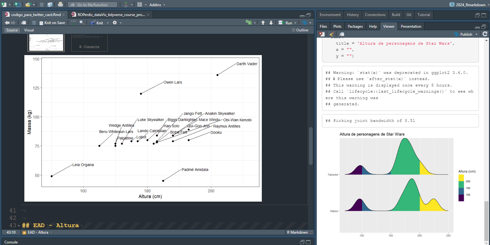

[1] "awk" "bash" "coffee" "gawk" "groovy" "haskell"
[7] "lein" "mysql" "node" "octave" "perl" "php"
[13] "psql" "Rscript" "ruby" "sas" "scala" "sed"
[19] "sh" "stata" "zsh" "asis" "asy" "block"
[25] "block2" "bslib" "c" "cat" "cc" "comment"
[31] "css" "ditaa" "dot" "embed" "eviews" "exec"
[37] "fortran" "fortran95" "go" "highlight" "js" "julia"
[43] "python" "R" "Rcpp" "sass" "scss" "sql"
[49] "stan" "targets" "tikz" "verbatim" "ojs" "mermaid" Sintaxe
A sintaxe de Markdown é simples. Exponho1 abaixo as notações mais comuns da linguagem. Testem em seus documentos.
Objetivos de aprendizado
- Aprender a utilizar cabeçalhos para divisões no texto;
- Aplicar formatação de texto (negrito, itálico, listas);
- Inserir e executar blocos de código;
- Entender a diferença entre texto e código no documento;
- Incluir tabelas e gráficos gerados pelo código R;
- Incorporar elementos visuais adicionais, como imagens e links.
Formatação
| Sintaxe | Resultado |
|---|---|
|
itálico é itálico negrito é negrito |
|
itálico e negrito |
|
Sobrescrito2 / Subescrito2 |
|
|
|
verbatim |
| Traço – | Traço – |
| Travessão — | Travessão — |
| Régua horizontal *** | Régua horizontal *** |
Cabeçalho
| Sintaxe | Resultado |
|---|---|
|
Cabeçalho 1 |
|
Cabeçalho 2 |
|
Cabeçalho 3 |
|
Cab. 4 4 |
|
Cab. 5 |
|
Cab. 6 |
Links
| Sintaxe | Resultado |
|---|---|
|
https://ufrr.br/ |
|
UFRR |
|
|
|
|
|
|
|
Listas
| Sintaxe | Resultado |
|---|---|
|
|
|
|
|
|
|
continua após
|
|
|
Expressões matematicas
Expressões matemáticas podem ser inserir utilizando um cifrão, $, antes e depois da expressão. Já equações matemáticas devem ser inseridas com um par de cifrões, $$, antes e depois da equação. Logo, temos a expressão $x = y $ que será compilada em:
\(x = y\)
Já a equação matemática $$math-equation$$ é compilada para
\[math-equation\]
Citação em blocos
Citações podem ser feitas em blocos por meio do acento circunflexo, >. Basta inserir o > no início de uma linha e, em seguida, inserir text.
Bloco de citação
Outra opção é inserir o texto dentro de três crases:
Este texto será apresentado com um destaque visual.Podemos também fazer uso de quatro espaços para destacar o texto:
Com quatro espaços, eu destaco o texto também.Blocos de código
Para fazer um bloco de código, devemos inserir três crases (“`”) seguidas pelo nome da linguagem que vamos utilizar (e.g., R, Python, Julia etc) em letras minúsculas, colocando o nome entre chaves (“{}”).
Um código em R:
```{r}
print("Olá, como vai?")
```Um código em Python:
```{python}
print("OI")
```As linguagens em blocos de códigos são processadas pelo pacote knitr (Xie 2014, 2015, 2023). Atualmente, as linguagens que têm suporte para serem utilizadas em blocos de código são:
Para mais exemplos, veja a seção “Other Languages” do livro “Rmarkdown Cookbook” (Xie, Dervieux, e Riederer 2020).
Códigos R em linha (“inline codes”)
Códigos R em linha, isto é, pedaços de códigos mesclados diretamente ao texto, não inclusos em “code chuncks”, podem ser feitos utilizando a notação r. Inserimos o pedaço de código após a letra r, e antes da crase. O resultado será exposto como um texto normal, e não será distinto do texto circundante. Uma das implicações disso é permitir confiança na transmissão de informações se mantivermos uma base de dados atualizada.
Tomando o conjunto de dados iris como exemplo, podemos informar quantas linhas há neste conjunto de dados utilizando a notação:
150
Ou então, podemos deixar escrito em nosso arquivo comandos específicos de cálculos de determinadas viaráveis para que os valores estejam sempre de acordo com nosso conjunto de dados. Vejam:
+ Há dados para 3 espécies
+ Os dados possuem 150 linhas e 5 colunas.
Tabelas
Tabelas podem ser inclusas de diversas maneiras em documentos com Rmarkdown. A maneira mais comum de incluir tabelas é usar código Markdown. Por exemplo, o código abaixo cria uma tabela:
| Var1 | Var2 | Nome |
|---------|:-----|------:|
| 10 | 9 | Joana |
| 15 | 7 | João |
| 20 | 4 | Jaci |
: Demonstração de sintaxe de tabela em Markdown| Var1 | Var2 | Nome |
|---|---|---|
| 10 | 9 | Joana |
| 15 | 7 | João |
| 20 | 4 | Jaci |
Outra maneira de criar tabelas é através da importação de arquivos por meio de códigos. Tomemos por exemplo os comandos necessários para importar uma tabela de extensão CSV e dados separados por tabulação (“\t”) contendo informação sopre municípios do Brasil: https://raw.githubusercontent.com/LABOTAM/IntroR/main/dados/municipiosbrasil.csv.
dad <- read.table("https://raw.githubusercontent.com/LABOTAM/IntroR/main/dados/municipiosbrasil.csv", sep = "\t", header = TRUE)
head(dad, 6) Country Province Regiao Municipio Latitude Longitude
1 Brasil Acre Norte Mâncio Lima -7.614 -72.896
2 Brasil Acre Norte Rodrigues Alves -7.742 -72.647
3 Brasil Acre Norte Cruzeiro do Sul -7.631 -72.67
4 Brasil Acre Norte Porto Walter -8.269 -72.744
5 Brasil Acre Norte Marechal Thaumaturgo -8.941 -72.792
6 Brasil Acre Norte Jordão -9.434 -71.884Para deixar a tabela mais elegante visualmente, uma dica é utilizar a função knitr::kable():
knitr::kable(head(dad, 6))| Country | Province | Regiao | Municipio | Latitude | Longitude |
|---|---|---|---|---|---|
| Brasil | Acre | Norte | Mâncio Lima | -7.614 | -72.896 |
| Brasil | Acre | Norte | Rodrigues Alves | -7.742 | -72.647 |
| Brasil | Acre | Norte | Cruzeiro do Sul | -7.631 | -72.67 |
| Brasil | Acre | Norte | Porto Walter | -8.269 | -72.744 |
| Brasil | Acre | Norte | Marechal Thaumaturgo | -8.941 | -72.792 |
| Brasil | Acre | Norte | Jordão | -9.434 | -71.884 |
Figuras
A maneira mais simples de inserir uma figura é usando a notação abaixo:
A figura pode estar gravada em seu computador, ou pode estar alojada na rede em algum sítio digital. O necessário é que o endereço esteja correto. Por exemplo, a figura “capa.png” está dentro de uma pasta “figuras/” dentro deste projeto. Vou colocá-la abaixo da seguinte maneira:

As figuras inseridas podem ser de diversos formatos: jpeg, png, tiff etc. Porém, quanto menor o tamanho da figura, menor será o tempo de compilação do arquivo. É importante então se atentar para este detalhe.
Outra maneira de inserir figuras é por meio de funções dentro de blocos de código. Vamos incluir uma imagem usando a função knitr::include_graphics():
```{r}
knitr::include_graphics("figuras/capa.png")
```knitr::include_graphics("figuras/capa.png")As tabelas escritas em Markdown contendo código e sintaxe da linguagem foram abertamente inspirados nesta página que ensina sobre a sintaxe de Markdown no livro sobre o Quarto.↩︎